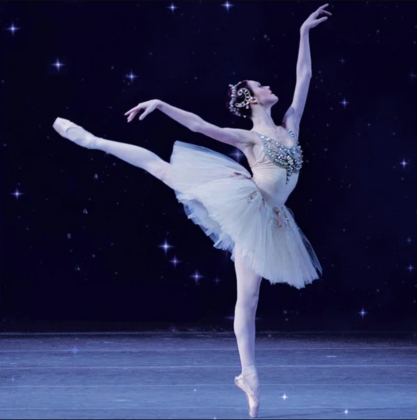

.png)
França- Cultura |
|---|
A cultura francesa é uma das mais ricas e influentes do mundo, abrangendo uma ampla gama de áreas, como arte, literatura, moda, música, cinema e culinária. A França é conhecida por seu patrimônio cultural vasto e diversificado, que continua a impactar e inspirar o mundo. |
Música- Clássica e Ópera |
|
A França tem uma rica tradição musical, especialmente na música clássica e na ópera. Compositores como Claude Debussy e Hector Berlioz deixaram um legado duradouro com suas composições inovadoras.. |
 |
Moda- Alta Costura |
A França é sinônimo de moda e elegância. Paris é considerada uma das capitais mundiais da moda, lar de muitas das mais prestigiadas casas de alta costura, como Chanel, Dior e Louis Vuitton. A Semana de Moda de Paris é um evento crucial no calendário da moda global. |
Estilo e influencia |
A moda francesa é conhecida por seu estilo chic e sofisticado. Ícones da moda como Coco Chanel revolucionaram o mundo da moda com suas criações atemporais e inovadoras. |
Pintura e escultura |
A França tem uma longa tradição nas artes visuais, destacando-se na pintura e escultura. Artistas como Claude Monet, Edgar Degas e Auguste Rodin são nomes emblemáticos. Movimentos artísticos como o Impressionismo tiveram origem na França e revolucionaram a maneira como a arte é percebida e criada. |
Museus e galerias |
O Museu do Louvre em Paris é um dos mais visitados do mundo, abrigando obras-primas como a Mona Lisa e a Vênus de Milo. Além do Louvre, o Museu d'Orsay e o Centro Pompidou são importantes centros de arte em Paris. |